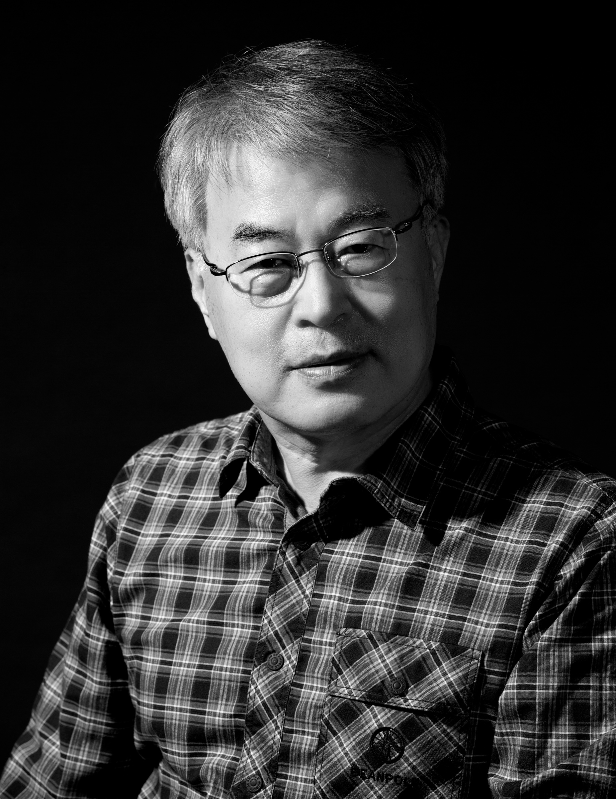
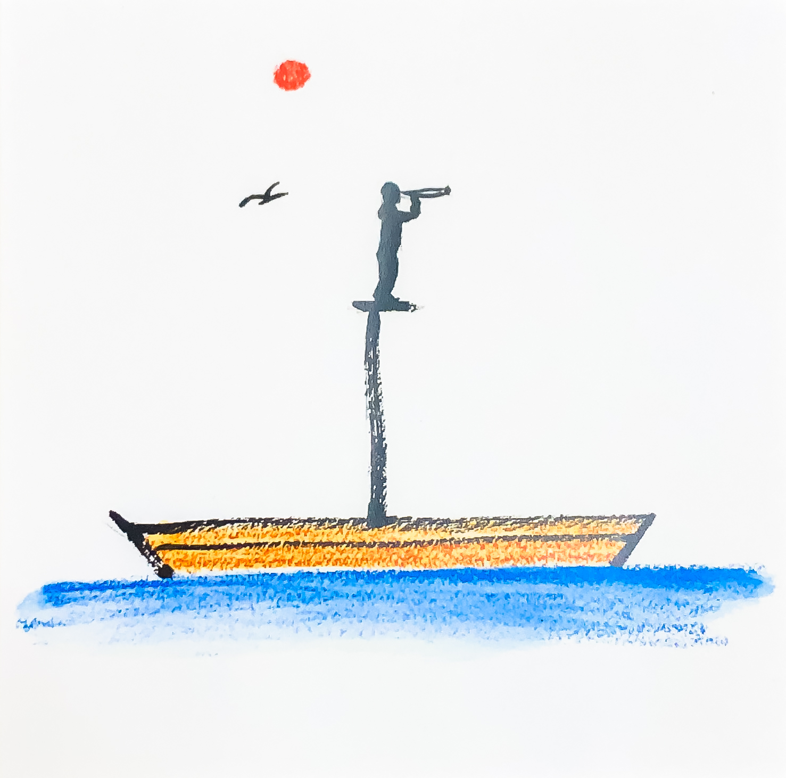

서석장 / Seo Seok-Jang

나는 오래된 장소를 찾아 사진을 찍어 왔다. 처음에는 그곳의 풍경과 형태에 이끌렸지만, 시간이 흐르면서 관심은 눈앞에 보이는 것에서 그 장소를 살아온 사람들과 그들이 남긴 것으로 옮겨갔다.
바다와 산사, 기도의 장소와 고분은 서로 다른 모습을 하고 있다. 그러나 그곳에 머물며 사진을 찍는 동안, 한 장소가 눈에 보이는 풍경만으로 이루어져 있지 않다는 것을 알게 되었다. 사람은 떠나고 풍경은 달라지지만, 그들의 행위와 삶은 흔적이 되어 그 자리에 남는다. 바다 앞에서는 그곳에 남겨진 것이 나 자신의 시간이었다. 매번 달라지는 수면을 마주하며, 나는 내 안의 변화를 들여다보았다.
사진을 만드는 방법도 장소에 따라 달라졌다. 흑백에서는 색을 덜어내어 형태와 명암을 드러내기도 하고, 적외선으로 나뭇잎을 밝히고 익숙한 색을 바꿔 같은 풍경을 낯설게 만나기도 한다. 사진은 보이는 것을 기록하는 일이면서, 익숙한 세계를 새롭게 발견하는 실험이기도 하다.
사람이 떠난 자리를 오래 바라보다 보니, 이제는 그 자리를 지나가는 사람들이 궁금해진다. 변하지 않은 듯 보이는 공간도 누가 어떻게 지나가느냐에 따라 다른 의미를 갖는다. 장소는 어떻게 사람의 삶을 품고, 사람은 그 장소를 어떻게 바꾸는가. 그 질문이 나를 다시 사진 앞에 서게 한다.
I have long photographed places shaped by time. At first, I was drawn to their landscapes and forms. Over time, however, my attention shifted from what lay before my eyes to the people who had lived there and what they left behind.
The sea, mountain temples, places of prayer, and ancient burial mounds may seem to have little in common. Yet, as I spent time photographing them, I came to realize that a place holds more than what we can see. People leave and landscapes change, but traces of their lives and actions remain. By the sea, what I found was a trace of my own time. Facing the ever-changing surface of the water, I began to look inward and recognize the changes within myself.
My approach to photography has also changed from place to place. In black and white, I strip away color to reveal form and contrasts of light and shadow. Through infrared photography, I render foliage luminous and transform familiar colors, encountering the same landscape in an unfamiliar way. Photography is both a means of recording what is visible and an experiment in discovering the familiar world anew.
After spending so long looking at places people have left behind, I now find myself drawn to those who pass through them. Even a space that appears unchanged can take on different meanings depending on who moves through it and how. How does a place hold the lives of people, and how do people, in turn, transform that place? It is this question that brings me back to photography.
